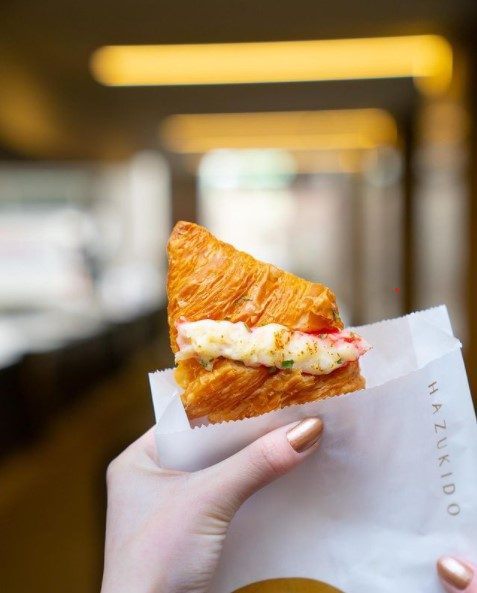

Today I will introduce some of the best dessert stores in Toronto
I hope you are like me who is extremely with desserts, then wake up on the second day to feel guilty about all the desserts that we have consumed the day before. Lucky for you today, I will introduce some dessert shops that you will forget in your life.
Hattendo cream bun shop
Just look at this bun, it looks so creamy and delicious. If not for the ongoing pandemic, I would love to this place every day. There are so many exotic flavors of buns at this store, such as "Pumpkin Cream", "Chestnut Cream", "Custard Cream", and "Azuki Bean". This place also comes out with some special menu items each month. For example, if you worry about what to give your significant one a valentine's gift. You can also order 6 Bites of Love Cream Buns Set. They dip their signature cream buns into high-quality pink chocolate. This gift would capture your loved one's heart in no time. If you would to know more about this place, you should Click here to check the website
Hazukido Bakery shop
If you like Hattendo Cream Bakery, then I can make sure you like Hazukido Bakery too. They sell freshly baked croissants, but with the Hattendo cream bun fillings. They also sell croissants that are with seafood toppings, such as "Truffle crab meat" and "Cod Roe". You probably have heard about this place, that's because it only opens two months ago. If you would to know more about this place, you should Click here to check the website
Daan Go Cake Club
If you are the person that cares not only about the taste, but also the look of a dessert, then Daan Go Cake Club would be perfect for you. There are many different designs of cakes there, and the best thing about these designs is that you will never guess their taste. For example, you might think that the cake in the picture above tastes like real cheese, but it actually resembles bananas. Therefore, if you are interested in impressing your friends and loved ones. You should defintely check this place. Click here to look for more information.